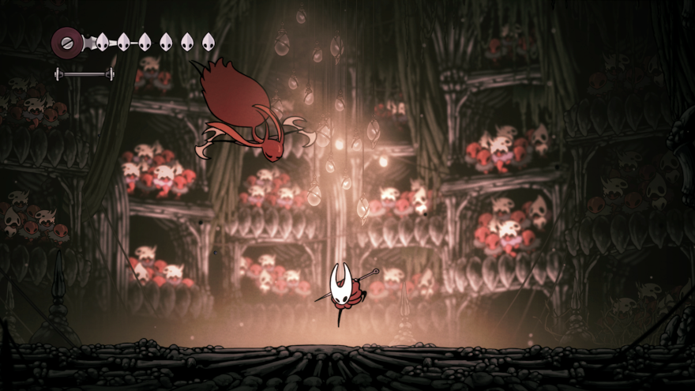
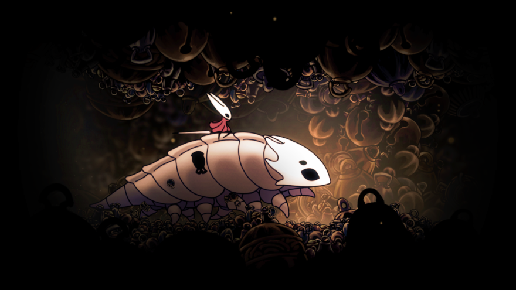
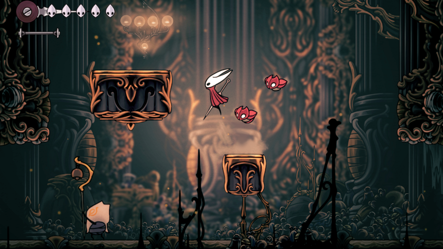
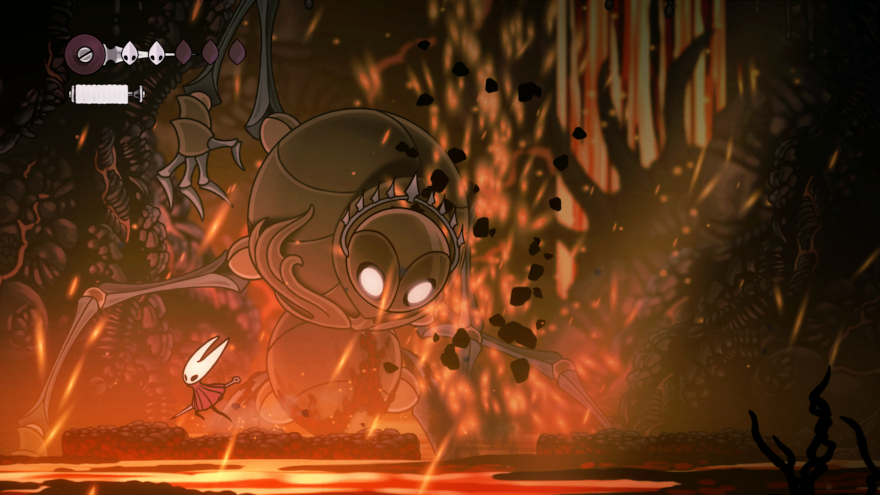
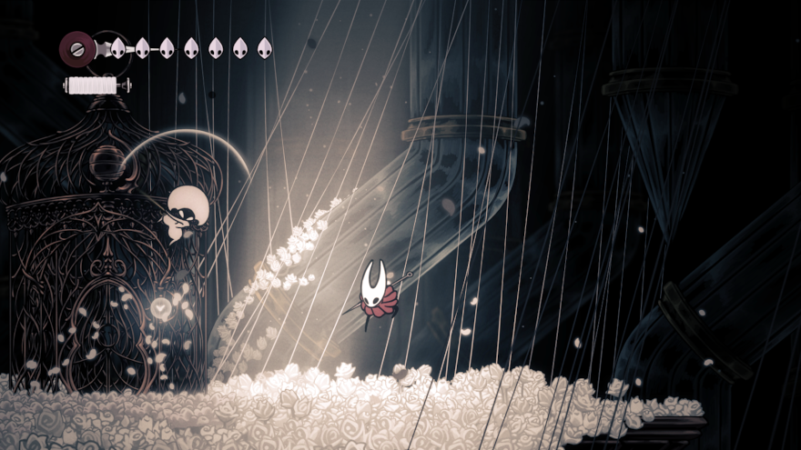
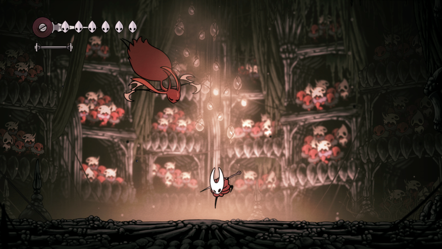
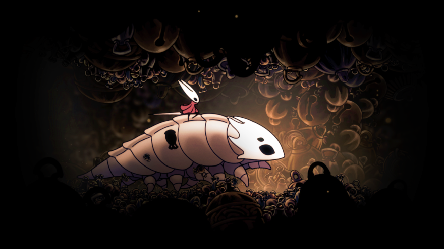
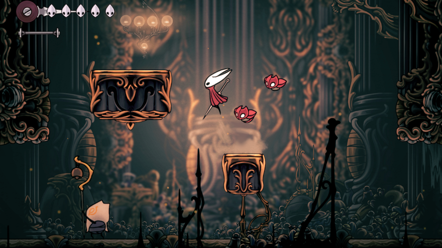
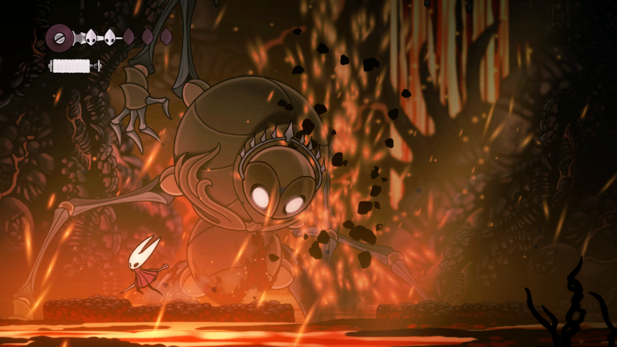
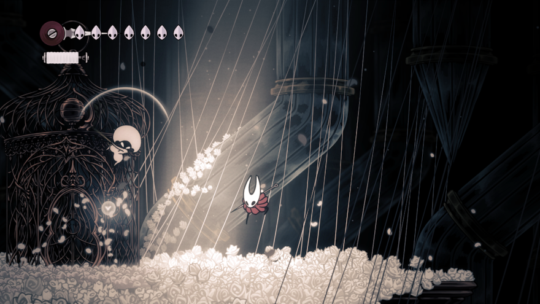

Capturada e Levada para uma Terra Distante
Hornet, princesa protetora de Hallownest, encontra-se sozinha em um mundo vasto e desconhecido. Ela deve lutar contra inimigos, procurar aliados e resolver mistérios enquanto ascende em uma peregrinação mortal ao pico do reino. Presa por sua linhagem e guiada por ecos de seu passado, Hornet se aventurará por grutas cobertas de musgo, florestas de corais e cidadelas brilhantes para desvendar um fio mortal que ameaça esta estranha nova terra.


 








